# A tibble: 12 × 4
playlist `Track Name` `Artist Name(s)` Acousticness
<fct> <chr> <chr> <dbl>
1 Winter Dance Vibes Dimmish 0.106
2 Winter Dance B.O.T.A. (Baddest Of Them All) - … Eliza Rose;Inte… 0.24
3 Winter Dance Your Man - Radio Edit Guilty 0.192
4 Winter Dance On My Mind - Enzo is Burning Remix Alan Fitzpatric… 0.153
5 Winter Dance Bootman Ross from Frien… 0.117
6 Winter Dance Schlafen COMPUTER DATA 0.136
7 Winter Dance like me paleboi 0.285
8 Winter Dance Talk To Me You'll Understand Ross from Frien… 0.664
9 Winter Dance Roach Fingers Jesse Bru 0.108
10 Winter Dance Fork in the Path - David Marston … Life on Planets… 0.196
11 Winter Dance pass on over sunflwr 0.521
12 Winter Dance The Way I'm Feeling Mall Grab 0.197Feature Analysis
Introduction
This part of my portfolio is mainly intended as a space to take a closer look at a number of interesting songs from my corpus. Rather than focusing only on broader patterns across playlists, it highlights individual tracks that stood out to me during the analysis of my corpus. At the same time, it also provides an opportunity to showcase some of the MIR methods I learned in the course by applying them to concrete musical examples.
Outlier analysis
In this section, I will discuss some of the outliers that we saw in the corpus exploration.
Acousticness in Winter Dance
This playlist contains two tracks with unusually high acousticness values, namely Talk to Me You’ll Understand - Ross From Friends and pass on over - sunflwr. My first intuition is to say that both of these songs are a lot more LOFI than the rest of the playlist, but let’s explore their features to find out why their acousticness is higher.
First of all we are going to plot the loudness and acousticness levels of all the tracks in the playlist, to see how these two tracks compare to the rest of the playlist.
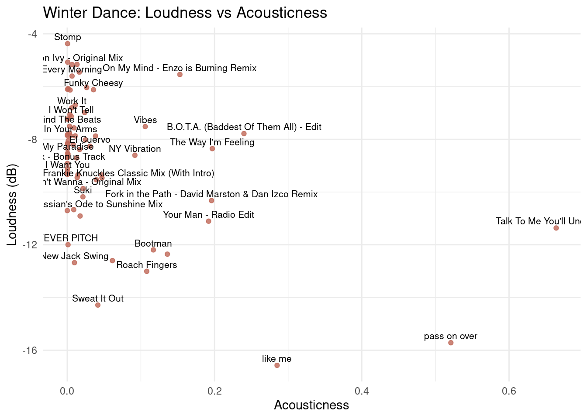
The scatterplot shows that the two acousticness outliers also differ clearly in loudness. Talk To Me You’ll Understand and pass on over are positioned far to the right of the rest of the playlist, confirming that they are much more acoustic than the other Winter Dance tracks. At the same time, both are also among the quieter tracks in the playlist, especially pass on over. This could suggest that their high acousticness is part of a broader difference in production style, rather than just an isolated feature value. While most Winter Dance tracks cluster around very low acousticness and relatively high loudness, these two songs combine a more acoustic sound world with quieter, less forceful production, which supports the impression that they are more lo-fi or organic in character.
We also want to compare the acoustincess and energy levels of the tracks, to see whether the acousticness outliers also differ in energy from the rest of the playlist.
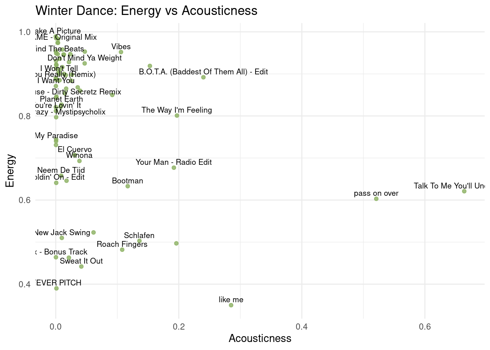
The energy plot shows a similar pattern, although less strongly than the loudness plot. Talk To Me You’ll Understand and pass on over again stand out as clear acousticness outliers, but in terms of energy they are not quite as separate from the rest of the playlist. Both tracks have relatively moderate energy values rather than the very high values seen in many of the more typical Winter Dance songs. This suggests that their higher acousticness is accompanied by a somewhat softer or less driving character, but the contrast with the rest of the playlist is weaker here than it was for loudness.
To dive deeper into what makes these songs acoustic, I want to compare them to a song in a similar loudness/energy range, but with much lower acousticness. This song is Like Me - Paleboi. It has even lower energy and loudness than the two acousticness outliers, but it is still a lot less acoustic. Comparing these three songs will hopefully give us a better sense of what the acousticness feature actually captures in this playlist.
Fever Pitch - Treasure Series
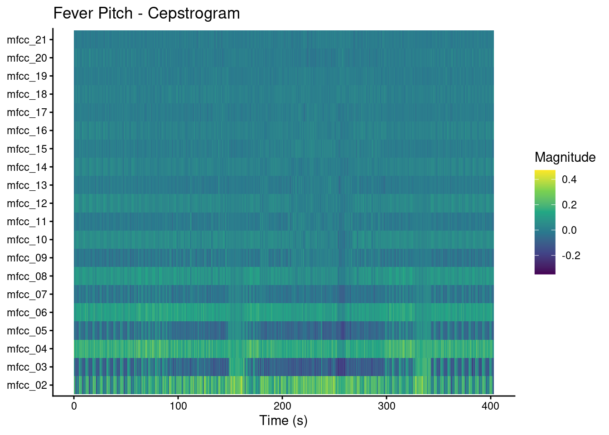
Like me - PaleBoi
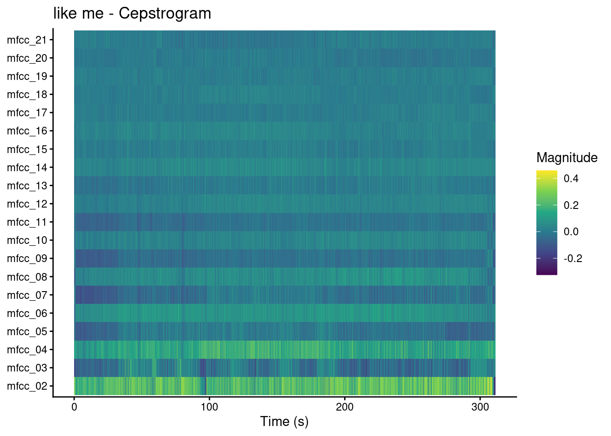
pass on over - snflower
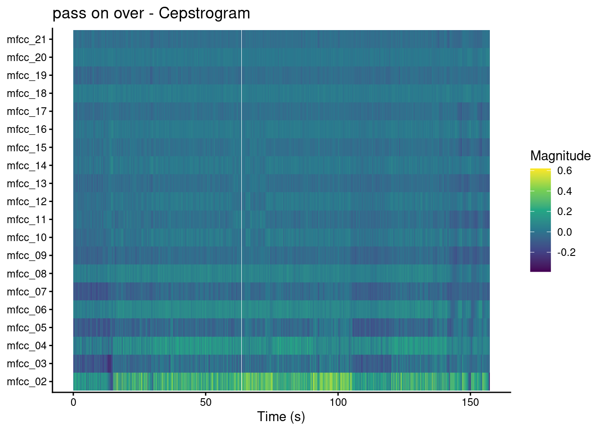
Talk to Me You’ll Understand - Ross From Friends
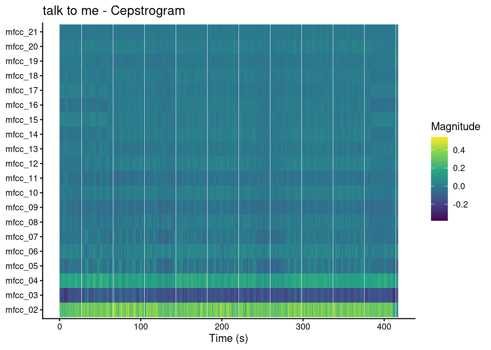
Interpretation
The cepstrograms suggest a subtle difference between the less acoustic tracks and the two acousticness outliers. Fever Pitch and Like Me, which have relatively low acousticness but comparable loudness and energy, seem to show somewhat higher magnitudes in the upper timbre bands. In contrast, pass on over and especially Talk To Me You’ll Understand appear to be more concentrated in the lower bands. This points to a broader difference in timbral profile, even if the exact meaning of these bands is not easy to interpret directly.
Another thing that stands out is that Fever Pitch shows clearer line-like patterns across the bands, which fits with the fact that it is a fairly percussive house track with relatively few instrumental influences. As the tracks become more acoustic, these lines seem to blend together more. This could correspond to the more lo-fi, filtered, or organic feel of the acousticness outliers, although that interpretation remains somewhat speculative. When comparing the songs by ear, I also noticed that the drums seem to become progressively more lo-fi, distorted, or filtered from Fever Pitch to Talk To Me You’ll Understand. That may play a role in why the more acoustic tracks look different here, but the cepstrograms alone are not enough to confirm that with certainty.
Conclusion
Overall, the acousticness comparison suggests that the two Winter Dance outliers differ from the rest of the playlist in more than just one Spotify feature. The scatterplots showed that Talk To Me You’ll Understand and pass on over are not only much more acoustic, but also somewhat quieter and slightly less energetic than most of the other tracks. The cepstrograms add to this by suggesting a shift in timbral character: Fever Pitch shows clearer line-like patterns that fit its more percussive house texture, while the more acoustic tracks appear more blended and diffuse. This may correspond to the more lo-fi, filtered, or organic feel of the acousticness outliers. At the same time, it is difficult to draw a really conclusive explanation, since acousticness is likely influenced by multiple factors at once, such as instrumentation, production style, timbral texture, and the overall character of the mix. The main conclusion, then, is that these outliers seem to occupy a different sonic corner of the playlist rather than simply being isolated acousticness anomalies.
Clocks - Coldplay
Clocks by Coldplay is a useful example for comparing chroma and timbre representations. The song repeats the same piano pattern and chord loop for most of its duration, while the texture and arrangement still change between sections. That makes it a good case for showing how different MIR representations capture different aspects of musical structure.
Euclidean chromagram

Cepstrogram
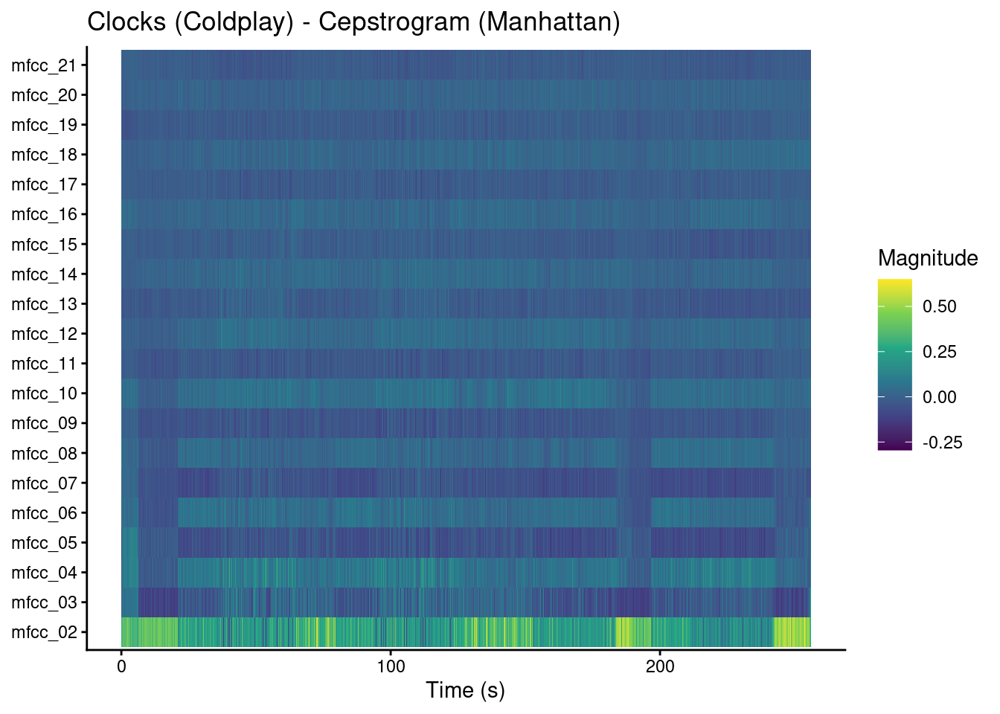
Timbre self-similarity matrix

Chroma self-similarity matrix
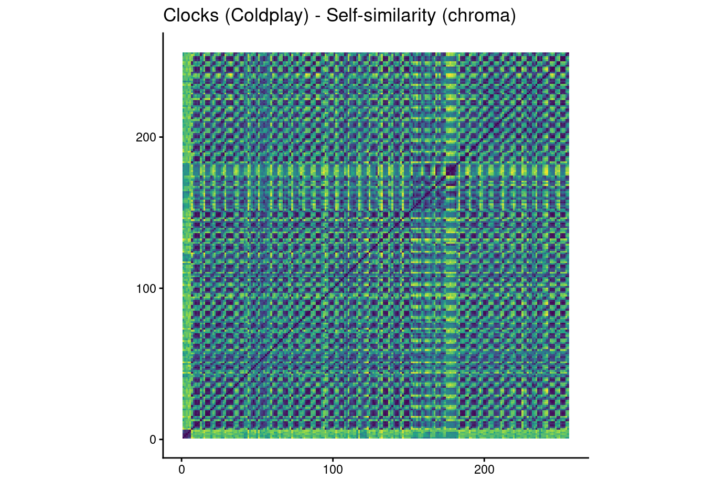
Interpretation
Clocks repeats the same piano pattern and chord loop for most of the song. This is clearly visible in the chromagrams, where the same few pitch classes return again and again across the track. The chroma self-similarity matrix also shows a high degree of similarity over time, which matches the fact that the harmony stays mostly the same. The clearest exception appears around 2:32, where there is a noticeable break and the piano shifts to different notes and chords, which is also clearly audible when listening to the song.
The timbre-based plots highlight sectional changes more clearly. Although the MFCC cepstrogram remains fairly consistent overall, it shifts when the arrangement changes, such as when the drums first enter around 0:21, when the vocals come in around 0:35, when heavier drums appear around 1:20, and during the break at 2:32. The timbre self-similarity matrix also shows clearer block-like regions, suggesting that the overall sound and texture change between sections, even when the chord loop continues underneath.
Afraid to Feel - LF System
Here, I explore novelty functions and tempograms for Afraid to Feel by LF System. The goal is to compare local peaks in novelty with tempo-related representations from both the DFT and ACT methods. I chose this song because it is one of the few electronic songs I know that seems to contain a clear tempo change. That makes it a good choice for examining whether these representations actually capture that change.
Novelty function 1: Tempo Change on Beat drop

This excerpt focuses on the first drop in the song. A clear pattern in the novelty curve is that the peaks occur closer together after the drop than before it. This suggests that events in the signal are happening more frequently, which is consistent with a tempo increase. In other words, the novelty function seems to reflect the change I hear in the track quite well in this section.
Novelty Function 2: Slowing down the tempo at breakdown

This excerpt shows the section where I hear the tempo slow down during the breakdown. I expected to see the same kind of increase in distance between peaks as in the first novelty plot, but that pattern is much less obvious here. A likely explanation is that this section is less strongly percussive, so there are fewer clear onsets for the novelty function to detect. As a result, the peaks are less sharp and the tempo change is harder to observe directly from the novelty curve alone.
Tempograms
ACT
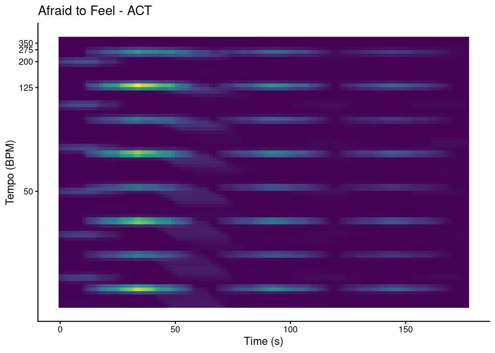
The ACT makes the tempo changes in the song quite clear. Around t = 20 s, the first drop shows a visible shift in the dominant tempo region, and another change can be seen around t = 60 s, where the breakdown begins. The strongest tempo bands appear to lie around roughly 100 BPM and 125 BPM (this matches online bpm info) . Overall, the ACT representation captures the large-scale tempo structure of the song quite well.
DFT
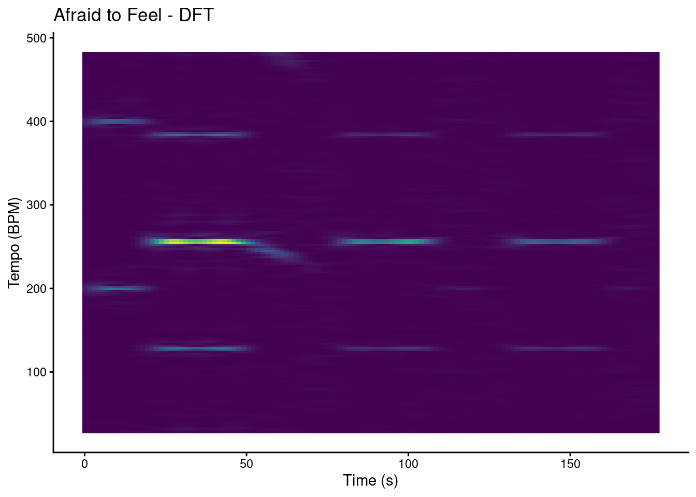
The DFT shows a very similar general pattern. Here too, the tempo change around t = 20 s and the breakdown around t = 60 s can be identified. Compared to the ACT, the DFT representation seems to emphasize tempo harmonics more clearly, while the ACT gives relatively more prominence to subharmonic relationships. This means that both representations reflect the same rhythmic structure, but they highlight different aspects of the tempo information
Stop Drugs (In Me Gezicht) - Gotu Jim
In this section, I explore the pitch content of Stop Drugs (In Me Gezicht) by Gotu Jim using a chromagram, a keygram and a best-matching key over time plot. I choose this song, because in the last part of the track, something strange seems to happen to the pitch. I hope to find out more about that here.
Chromagram
The chromagram provides a time-based representation of pitch-class activity. It is useful for identifying recurring harmonic patterns and for getting a first impression of the tonal content of the song.
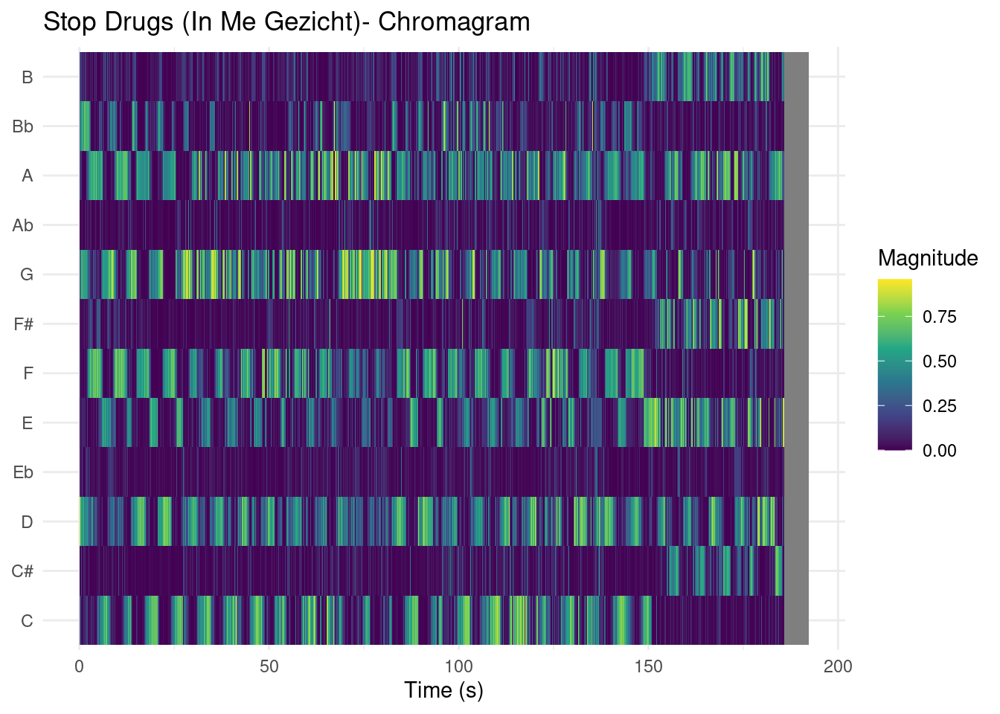
As expected, we see a clear change in chroma features in the last part of the track, at around 150 seconds. This means that the distribution of prominent notes changes noticeably at that point. In musical terms, this suggests a shift in the harmonic content of the song, which may indicate a change of key or tonal center.
Keygram
The keygram shows how well different major and minor key templates match the chroma features over time. To create the key templates, I first defined the pitch class distributions for a major and minor key based on the Krumhansl-Schmuckler key profiles. Then, I generated templates for all 12 major and 12 minor keys by circularly shifting these profiles.
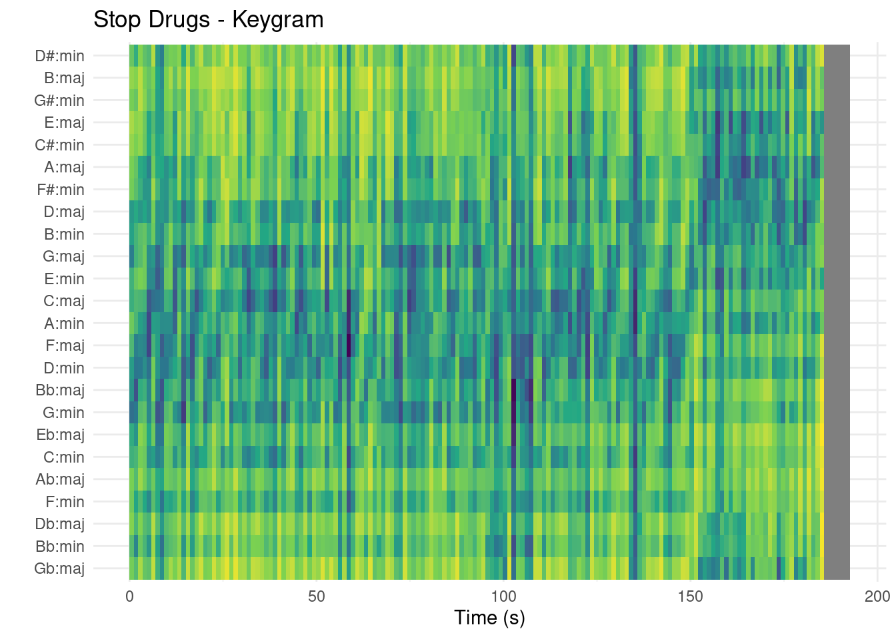
The dark patches in the plot show keys with a relatively small euclidian distance to the chroma features at that time point, which indicates a better match. We can see that the keygram shows a clear change in the best-matching keys around 150 seconds, which corresponds to the change in chroma features observed in the chromagram. This suggests that there is indeed a shift in the tonal center of the song at that point.
Best-matching key over time
To make the key estimation easier to interpret, I also extracted the single best-matching key at each time point instead of only plotting the full keygram. I first converted the chroma data into a format suitable for compmus and then reduced the time resolution by keeping every 50th frame, since key is generally more stable over longer stretches than individual chords.
Next, I compared each chroma vector to a set of major and minor key templates using compmus_match_pitch_template(). Because lower distance indicates a better match, I then selected the key with the smallest distance at each time point. Plotting these best-matching keys over time results in a simpler and more readable representation, which makes it easier to see whether the estimated key remains stable or changes during the track.
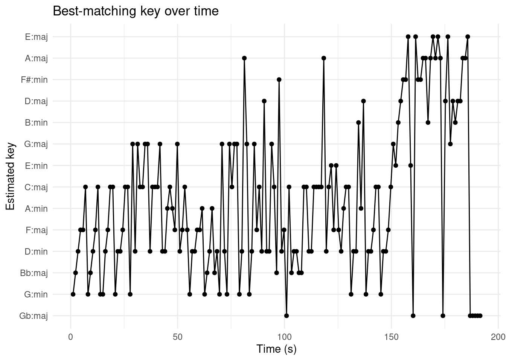
The plot of the best-matching key over time confirms the observations from the chromagram and keygram. There is a clear change in the estimated key around 150 seconds, which indicates a shift in the tonal center of the song. A cool thing to notice is the fact that this plot pretty much extracts the pattern of the blue patches from the keygram, but in a much more readable way. It also shows that the key estimation is not stable, as there are many fluctuations in the estimated key even before the change at 150 seconds. This is because the method is sensitive to small local changes in pitch-class content. If the harmony is somewhat ambiguous or not strongly centered on one key at every moment, several key templates can fit reasonably well. As a result, the best-matching key may fluctuate even when the overall tonal character of the song stays fairly similar.
Conclusion
Overall, the three representations point in the same direction. The chromagram shows a clear change in pitch-class activity in the final part of the track, and both the keygram and the best-matching key plot suggest that this corresponds to a shift in tonal center around 150 seconds. At the same time, the key estimation remains somewhat unstable throughout, which shows that the song is not cleanly captured by a single key at every moment.
This also suggests a limitation of the keygram approach. In this case, the keygrams seem to be more useful for detecting changes in pitch or tonal center than for assigning one stable key with much confidence. For estimating key over a longer stretch of music, it may therefore be better to start from the chromagram itself, identify the most prominent pitch classes in that section, and then match those to the most likely key (F Major before 150 seconds and D Major afterwards). In that sense, the keygram is helpful as an exploratory tool, but the chromagram may be more reliable for interpreting the actual key over longer time intervals.